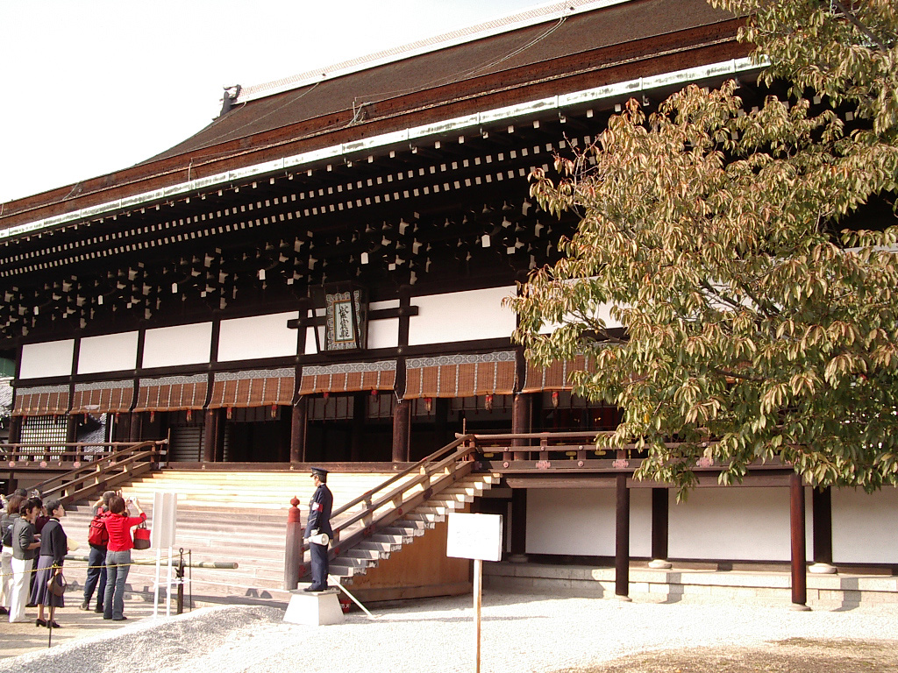

Historia miasta sięga VI w., gdy w 544 r. po raz pierwszy odbył się tam festiwal Aoi (Aoi Matsuri). Kioto nie było jednak pierwszą stolicą Japonii. Stało się nią dopiero w 794 r., gdy cesarz Kammu przeniósł stolicę do Heian-kyō, które obecnie leży na terenie miasta Kiotò.

Pałac Cesarski w Kioto